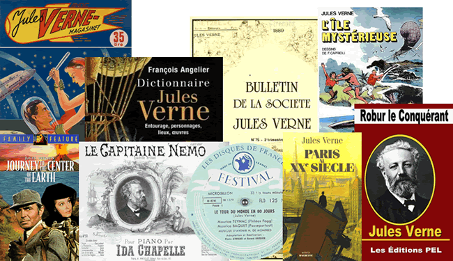

Verne-athon
The Verne-athon took place at Bibliothèque nationale de France, Paris on 4 May 2016.
The aim was to build upon the Jules Verne base r-ball.
Outcomes
The combined data from the first Verneathon is available in the Verneathon 1 curated r-ball.
Outline
- 9:00-9:30 Registration, Outline of the Day, and Setup
- 9:30-11:00 Brief review of RIMMF functionality
- 11:15-12:45 Let's RIMMF!
- 12:45-2:00 lunch break
- 2:00-3:30 Let's RIMMF!
- 3:30-4:00 Gather « R-balls » (and break)
- 4:00-5:30 Discussion and feedback
Scope
- The works of Jules Verne. Including, but not limited to:
- Le Tour du monde en 80 jours
- 20 000 lieues sous les mers
- Le Testament d'un excentrique
- Michel Strogoff
- De la Terre á la lune
- Les Enfants du capitaine Grant
- L'Île mystérieuse
- Aventures de la famille Raton (posthumous)
- Le Secret de Wilhelm Storitz (posthumous)
- In single or multiple expressions
- Carried on: objects, volumes, online ressources, audio-visual material, and everything in between and beyond.
Table topics
Attendees can choose between 7 tables, depending on the topic or work to which they best relate, their favourite type of ressource, and the level of difficulty they are willing to tackle, ie how comfortable they feel regarding the FRBR model and/or RDA instructions.
The topics are distributed as follows:
| Topic/work | Resource type | Difficulty level | |
| Table 1 : RIMMFons simplement | Le Tour du monde en 80 jours and Le Testament d'un excentrique | Printed books - individual works only | Beginner |
| Table 2 : Du noyau au nuage | Voyage au centre de la Terre and Cinq semaines en ballon | Printed books, audiobooks, e-resources - individual works only | Beginner - Confident |
| Table 3 : Jules Verne en technicolor et dolby surround | Musical and audio-visual adaptations of Verne's works | Music and AV resources | Confident - Advanced |
| Table 4 : Jules Verne et au-delà | Critical or related works | All types of resources (objects, books, etc.) | Beginner |
| Table 5 : Le tour du monde en 80 traductions | Verne in translations (all works, all countries, all languages) | Printed books and audiobooks | Confident |
| Table 6 : Jules Verne vous parle d'outre-tombe | Verne's posthumous works | All types of ressources | All levels |
| Table 7 : Les empêcheurs de RIMMFer en rond | VSequels, series, aggregates, multipart monographs : problematic cases | French printed books | Advanced |
Announcements, blogs, etc.
- Announcement and registration: RDA-thon 2016
- Jules Verne News: Paris : bientôt un Verne-athon à la BnF
- RDA@ABES: Archives de Catégorie: Transition bibliographique (France)
- rural smart: #Verneathon vs #Machiavel ? Entre les 2, je balance ...
- Twitter: #Verneathon
Photos
{kind=link}
{kind=link}
